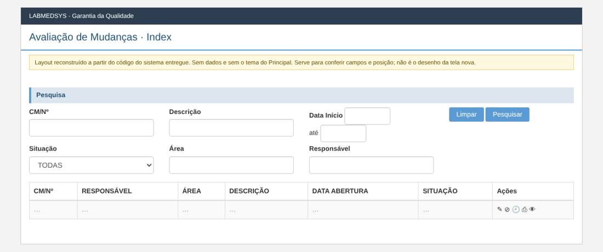
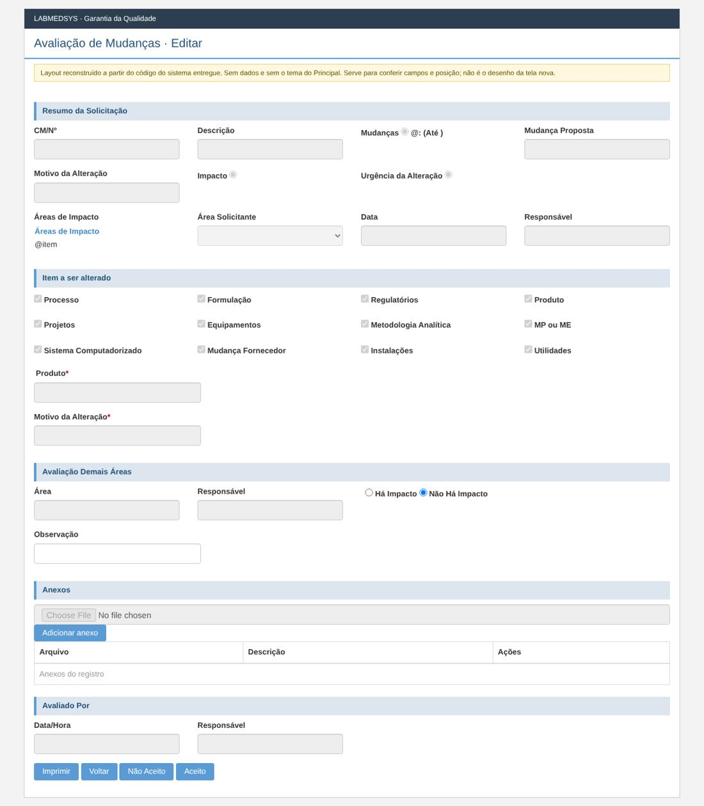
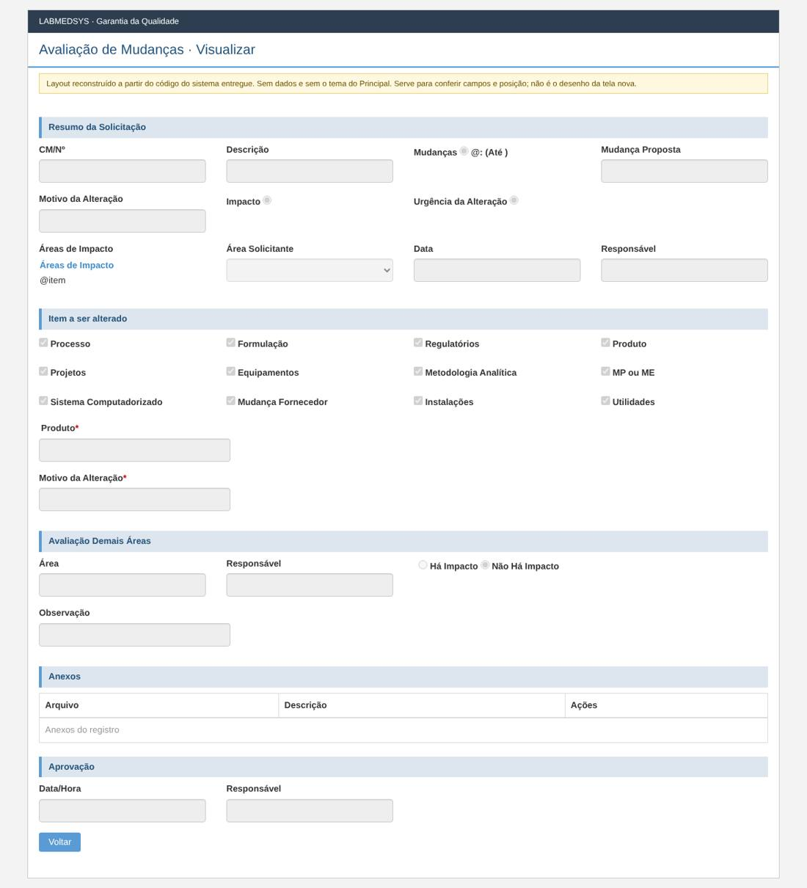

Menu: Garantia da Qualidade · Controle de Mudanças · Ficha: rascunho automático, a completar · Origem no sistema entregue: AvaliacaoMudanca
As telas novas seguem o processo e as regras do sistema entregue, sem transcrever o que for falha de código, de conceito ou de campo mal colocado. Cada decisão na ficha é Manter, Corrigir ou Ideal depois.
Como é a tela no sistema entregue (layout reconstruído)
Reconstruído a partir do código das páginas do sistema entregue: mostra os campos, os rótulos, os asteriscos de obrigatório e a posição. Não tem dados e não usa o tema do Principal; os prints reais estão logo abaixo. Opções marcadas por padrão (caixas e botões de opção) são do código, não de dados.
Lista

Editar

Visualizar

Levantamento no código (rascunho automático)
A ficha completa desta tela ainda não foi escrita. Abaixo está o levantamento automático feito no código do sistema entregue: páginas, rotas, campos, modelos, regras de validação do servidor, situações e mensagens.
Menu: Garantia da Qualidade › Controle de Mudanças › Avaliação de Mudanças
Origem no legado: área Avaliacao, controlador AvaliacaoMudancaController (HSolutions.GQ.UI/Areas/Avaliacao/Controllers/AvaliacaoMudancaController.cs)
Estado: rascunho automático do levantamento; a ficha completa fica em ../fichas/.
Este levantamento descreve o comportamento atual do sistema entregue, sem julgamento. A decisão do que manter, corrigir ou deixar para o ideal está na ficha completa.
1. Páginas da tela
| Página | Arquivo | Modelo |
|---|---|---|
| Editar | HSolutions.GQ.UI/Areas/Avaliacao/Views/AvaliacaoMudanca/Editar.cshtml | AvaliacaoMudancaSalvarModel |
| Imprimir | HSolutions.GQ.UI/Areas/Avaliacao/Views/AvaliacaoMudanca/Imprimir.cshtml | — |
| Index | HSolutions.GQ.UI/Areas/Avaliacao/Views/AvaliacaoMudanca/Index.cshtml | AvaliacaoMudancaIndexModel |
| Visualizar | HSolutions.GQ.UI/Areas/Avaliacao/Views/AvaliacaoMudanca/Visualizar.cshtml | AvaliacaoMudancaSalvarModel |
Partials usados: HSolutions.GQ.UI/Views/Shared/_UploadArquivo.cshtml, HSolutions.GQ.UI/Views/Shared/_GridAnexos.cshtml, HSolutions.GQ.UI/Views/Shared/_Log.cshtml
2. Ações do controlador (rotas)
| Ação | Retorno | Parâmetros | Atributos | Linha |
|---|---|---|---|---|
| Index | ActionResult | 33 | ||
| Pesquisar | JsonResult | DateTime? dataInicio, DateTime? dataFim, int? indice, string cmn, string descricao, int situacao, string nomeArea, string nomeResponsavel | HttpPost | 43 |
| Editar | ActionResult | int id, int idAreaResponsavel, int idAvaliacaoSolicitacao | 170 | |
| Visualizar | ActionResult | int id, int idAreaResponsavel, int idAvaliacaoSolicitacao | 186 | |
| SalvarAvaliacao | JsonResult | AvaliacaoSolicitacaoSalvarModel model | HttpPost | 200 |
| Imprimir | ActionResult | int id, int IdAreaResponsavel | 313 |
3. Campos, colunas e botões
Editar (HSolutions.GQ.UI/Areas/Avaliacao/Views/AvaliacaoMudanca/Editar.cshtml)
Rótulos: CM/Nº (:35); Descrição (:39); Mudanças (:43); Mudança Proposta (:54); Motivo da Alteração (:61); Impacto (:65); Urgência da Alteração (:72); Áreas de Impacto (:83); Área Solicitante (:104); Data (:111); Responsável (:115); Processo (:138); Formulação (:149); Regulatórios (:160); Produto (:171); Projetos (:182); Equipamentos (:193); Metodologia Analítica (:204); MP ou ME (:215); Sistema Computadorizado (:226); Mudança Fornecedor (:237); Instalações (:248); Utilidades (:259); Produto * (:265); Motivo da Alteração * (:276); Área (:293); Responsável (:297); (:301); Justificativa (:324); Observação (:328); Data/Hora (:365); Responsável (:369)
| Tipo | Campo | Linha |
|---|---|---|
| input:hidden | hfId | 25 |
| input:hidden | hfIdAreaResponsavel | 26 |
| input:hidden | hfIdAvaliacaoSolicitacao | 27 |
| input:hidden | hfEAprovacao | 28 |
| input:text | txtProduto | 270 |
| input:text | txtMotivoAlteracao | 277 |
| input:text | txtJustificativa | 325 |
| input:text | txtObservacao | 329 |
| input:text | txtDataAvaliacao | 366 |
Botões e atalhos: Imprimir (:378); Voltar (:379); Não Aceito (:380); Aceito (:381)
Imprimir (HSolutions.GQ.UI/Areas/Avaliacao/Views/AvaliacaoMudanca/Imprimir.cshtml)
Títulos e seções: Imprimir (:7)
Index (HSolutions.GQ.UI/Areas/Avaliacao/Views/AvaliacaoMudanca/Index.cshtml)
Rótulos: CM/Nº (:23); Descrição (:28); Data Início (:33); Situação (:52); Área (:64); Responsável (:68)
| Tipo | Campo | Linha |
|---|---|---|
| input:text | txtCMN | 24 |
| input:text | txtDescricao | 29 |
| input:text | txtDataInicio | 35 |
| input:text | txtDataFim | 39 |
| select | cboSituacao | 53 |
| input:text | txtArea | 65 |
| input:text | txtResponsavel | 69 |
Botões e atalhos: Limpar (:44); Pesquisar (:45)
Visualizar (HSolutions.GQ.UI/Areas/Avaliacao/Views/AvaliacaoMudanca/Visualizar.cshtml)
Rótulos: CM/Nº (:32); Descrição (:36); Mudanças (:40); Mudança Proposta (:51); Motivo da Alteração (:58); Impacto (:62); Urgência da Alteração (:69); Áreas de Impacto (:80); Área Solicitante (:101); Data (:108); Responsável (:112); Processo (:135); Formulação (:146); Regulatórios (:157); Produto (:168); Projetos (:179); Equipamentos (:190); Metodologia Analítica (:201); MP ou ME (:212); Sistema Computadorizado (:223); Mudança Fornecedor (:234); Instalações (:245); Utilidades (:256); Produto * (:262); Motivo da Alteração * (:273); Área (:290); Responsável (:294); (:298); Justificativa (:321); Observação (:325); Data/Hora (:359); Responsável (:363)
| Tipo | Campo | Linha |
|---|---|---|
| input:hidden | hfId | 22 |
| input:hidden | hfIdAreaResponsavel | 23 |
| input:hidden | hfIdAvaliacaoSolicitacao | 24 |
| input:hidden | hfEAprovacao | 25 |
| input:text | txtProduto | 267 |
| input:text | txtMotivoAlteracao | 274 |
| input:text | txtJustificativa | 322 |
| input:text | txtObservacao | 326 |
Botões e atalhos: Voltar (:372)
_UploadArquivo (HSolutions.GQ.UI/Views/Shared/_UploadArquivo.cshtml)
Rótulos: Arquivo (:75); Descrição (:81); Status (:99); Observação (:112)
| Tipo | Campo | Linha |
|---|---|---|
| input:hidden | hdnArquivoId | 67 |
| input:file | txtArquivo | 76 |
| input:text | txtDescricaoArquivo | 82 |
| select | StatusMonitoramento | 100 |
| textarea | txtObservacao | 113 |
Botões e atalhos: Enviar (:87)
_Log (HSolutions.GQ.UI/Views/Shared/_Log.cshtml)
Botões e atalhos: FECHAR (:7)
4. Modelos de dados da tela
AvaliacaoMudancaIndexModel (HSolutions.GQ.UI/Areas/Avaliacao/Models/AvaliacaoMudancaIndexModel.cs)
| Tipo | Propriedade | Validação | Linha |
|---|---|---|---|
| int | IdSolicitacaoMudanca | 16 | |
| int | IdAvaliacaoSolicitacao | 17 | |
| string | NomeResponsavel | 19 | |
| string | NomeAreaResponsavel | 20 | |
| int | IdResponsavel | 22 | |
| int | IdAreaResponsavel | 23 | |
| string | DataSolicitacao | 25 | |
| string | DataAprovacao | 26 | |
| string | Observacao | 28 | |
| string | Situacao | 30 | |
| IList |
Situacoes | 31 |
AvaliacaoMudancaIndexResultadoModel (HSolutions.GQ.UI/Areas/Avaliacao/Models/AvaliacaoMudancaIndexResultadoModel.cs)
| Tipo | Propriedade | Validação | Linha |
|---|---|---|---|
| int | Id | 17 | |
| int | IdAreaResponsavel | 18 | |
| int | IdAvaliacaoSolicitacao | 19 | |
| string | CMN | 20 | |
| string | Descricao | 21 | |
| DateTime? | DataAbertura | 22 | |
| string | Situacao | 23 | |
| string | NomeResponsavel | 24 | |
| string | NomeAreaResponsavel | 25 | |
| int | IdResponsavelArea | 26 | |
| bool | TemAcessoTelaAvaliacaoSolicitacao | 27 |
AvaliacaoMudancaSalvarModel (HSolutions.GQ.UI/Areas/Avaliacao/Models/AvaliacaoMudancaSalvarModel.cs)
| Tipo | Propriedade | Validação | Linha |
|---|---|---|---|
| int | IdSolicitacaoMudanca | 16 | |
| int | IdAvaliacaoSolicitacao | 17 | |
| string | Cmn | 18 | |
| string | Descricao | 19 | |
| string | MudancaProposta | 20 | |
| string | MotivoAlteracao | 21 | |
| string | TipoMudanca | 22 | |
| string | DataValidade | 23 | |
| string | Impacto | 24 | |
| string | UrgenciaAlteracao | 25 | |
| string | ItemAlterado | 26 | |
| string | DescricaoProduto | 27 | |
| IList |
AreasImpacto | 28 | |
| string | NomeAreaSolicitante | 29 | |
| string | DataCriacao | 30 | |
| string | NomeResponsavel | 31 | |
| string | NomeAreaResponsavel | 33 | |
| int | IdAreaResponsavel | 34 | |
| string | NomeResponsavelArea | 35 | |
| string | ResponsavelAvaliacao | 37 | |
| string | DataAvaliacao | 38 | |
| int | HaImpacto | 40 | |
| string | Justificativa | 41 | |
| string | Observacao | 42 | |
| IList |
Anexos | 44 | |
| IList |
ItemsASeralterados | 46 |
GridModel (HSolutions.GQ.UI/Models/GridModel.cs)
| Tipo | Propriedade | Validação | Linha |
|---|---|---|---|
| IEnumerable |
Source | 14 | |
| PaginacaoGridModel | Paginacao | 16 |
UploadModel (HSolutions.GQ.UI/Models/UploadModel.cs)
| Tipo | Propriedade | Validação | Linha |
|---|---|---|---|
| string | Url | 43 | |
| string | PosCallback | 47 | |
| string | PreCallback | 51 | |
| IDictionary |
Status | 53 | |
| bool | ExibeObservacao | 54 |
5. Situação (estado) e histórico
- Pesquisar (:43)
- CONSULTA: Nenhum
- SalvarAvaliacao (:200)
- MUDA PARA: Aprovada (:214), Reprovada (:216)
- HISTÓRICO: altera com histórico (:287), altera com histórico (:289)
6. Regras de validação do servidor
Cada linha é uma regra que o servidor confere ao gravar. A mensagem é a que o usuário vê.
| Validador | Quando recusa (condição) | Mensagem | Campo | Linha |
|---|---|---|---|---|
| AvaliacaoSolicitacaoValidator | if (entity == null) | Entidade de domínio não pode ser nula. | — | 17 |
| AvaliacaoSolicitacaoValidator | if (string.IsNullOrEmpty(avaliacaoSolicitacao.Justificativa) && avaliacaoSolicitacao.Situacao == Enumeradores.TipoSituacao.Reprovada) | A justificativa da avaliação é obrigatória. | — | 27 |
| AvaliacaoSolicitacaoValidator | if (avaliacaoSolicitacao.AreasEnvolvidasParaAvaliacao == null) | As areas envolvidas na avaliação não podem ser nulas. | — | 33 |
7. Mensagens (servidor e navegador)
Nada encontrado.
Script HSolutions.GQ.UI/Areas/Avaliacao/Script/AvaliacaoMudancaIndex.js — ações chamadas: actionImprimir, actionPesquisar
Nada encontrado.
Script HSolutions.GQ.UI/Areas/Avaliacao/Script/AvaliacaoSolicitacaoSalvar.js — ações chamadas: actionSalvarAvaliacao
Nada encontrado.
8. A completar na análise
- [ ] Regras de cada campo (obrigatório, tamanho, máscara, origem da lista).
- [ ] Quem pode ver e executar cada ação (funções de permissão).
- [ ] Lookups com outros módulos (Estoque, Produção, Principal).
- [ ] Anexos, relatórios (PDF) e notificações.
- [ ] Falhas conhecidas a replicar (inventário de telas e plano de testes).
- [ ] Casos de teste de aceite (plano de testes da GQ).